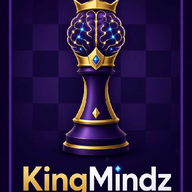

Tu entrenador de ajedrez
KingMind
Tu turno · BlancasNivel: Principiante
Computadora activa · motor local
El motor local funciona sin conexión. Stockfish se conecta de forma opcional mediante un Web Worker same-origin (/stockfish.js o /stockfish.wasm.js); si no está disponible, KingMind conserva el motor local y lo indica claramente.
Elegí la pieza para promocionar